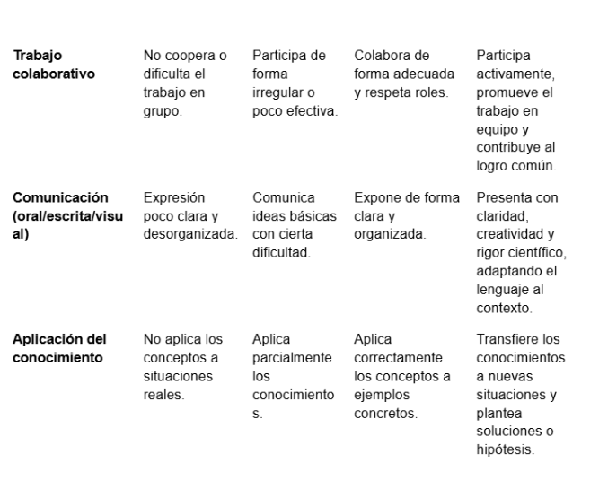

Instrumentos de evaluación
Para el desarrollo del proyecto didáctico dirigido al alumnado, se pretende evaluar no solo la adquisición de contenidos conceptuales sobre las redes tróficas, sino también el desarrollo de competencias como el pensamiento crítico, la interpretación de datos y el trabajo colaborativo. Para ello, se emplearán los siguientes instrumentos de evaluación, diferentes, que permiten recoger información variada y complementaria del proceso de aprendizaje.
1. Rúbrica de evaluación del producto final
https://rubistar.4teachers.org/index.php?screen=CustomizeTemplatePrint&



Tratamiento de los datos:
Se obtendrá una calificación global del producto final.
Se analizarán los resultados por criterios para detectar dificultades concretas (por ejemplo, si hay problemas generalizados en la interpretación de redes).
Estos datos servirán para ajustar futuras explicaciones o reforzar contenidos.
Con la rúbrica se permite identificar qué aspectos del aprendizaje han sido más complejos y mejorar la planificación didáctica. También favorece la autoevaluación si el alumnado la utiliza como referencia.
Texto
2. Cuestionario de evaluación (inicial y final)
Descripción del instrumento:
Se aplicará un cuestionario con preguntas de opción múltiple, verdadero/falso y respuestas abiertas breves sobre redes tróficas.
¿Qué evalúa?
Conocimientos previos (cuestionario inicial).
Aprendizaje adquirido tras el proyecto (cuestionario final).
Posibles ideas alternativas o errores conceptuales.
¿Cuándo se aplica?
Al inicio del proyecto (evaluación diagnóstica).
Al final del proyecto (evaluación sumativa y comparativa).
¿Cómo se obtienen los datos?
Se recogerán las respuestas y se cuantificarán (porcentaje de aciertos, errores frecuentes, etc.).
Tratamiento de los datos:
Comparación entre resultados iniciales y finales para medir progreso.
Identificación de preguntas con mayor tasa de error para detectar conceptos mal comprendidos.
Análisis grupal e individual
Con esta herramienta se permite adaptar la enseñanza desde el inicio según el nivel del alumnado, facilitar la reflexión docente sobre la eficacia de la metodología utilizada y generar debate en clase sobre errores comunes.